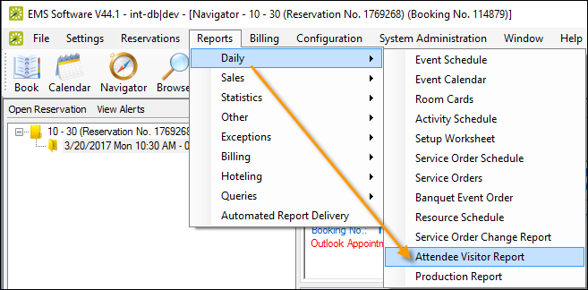
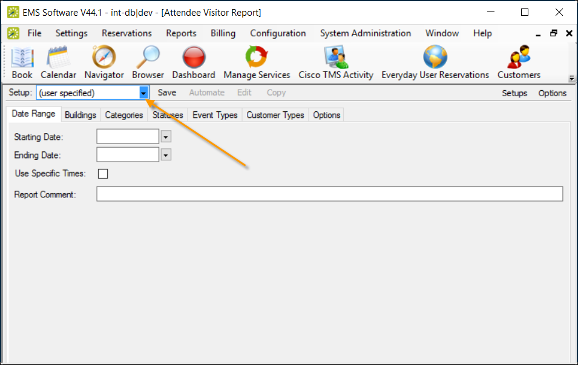
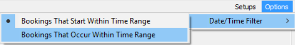
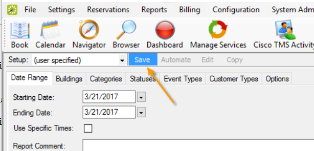

Generate Visitor Reports
To generate a daily report of visitors, follow the steps below.
- On the main menu, click Reports>Daily>Attendee Visitor Report.

- On the Setup dropdown list, you can select from a list of saved visitor reports for your organization, or you can set your own report parameters, options, and so on (leave "user specified" selected and populate the fields on each tab as needed). If using a saved report Setup, simply specify a date range.

Tip: You can edit saved report setups from the Setups option in the upper right corner. Additionally, you can quickly specify a date range based on when bookings that start or when they occur using the Options menu next to it.

To save your (user specified) report for future use (so that it is listed in the Setup dropdown): click Save next to the Setup field.

- To run the report once you have specified parameters, click Print. When finished, click OK on the Print dialog, and then Close on the Attendee Visitor Report screen.